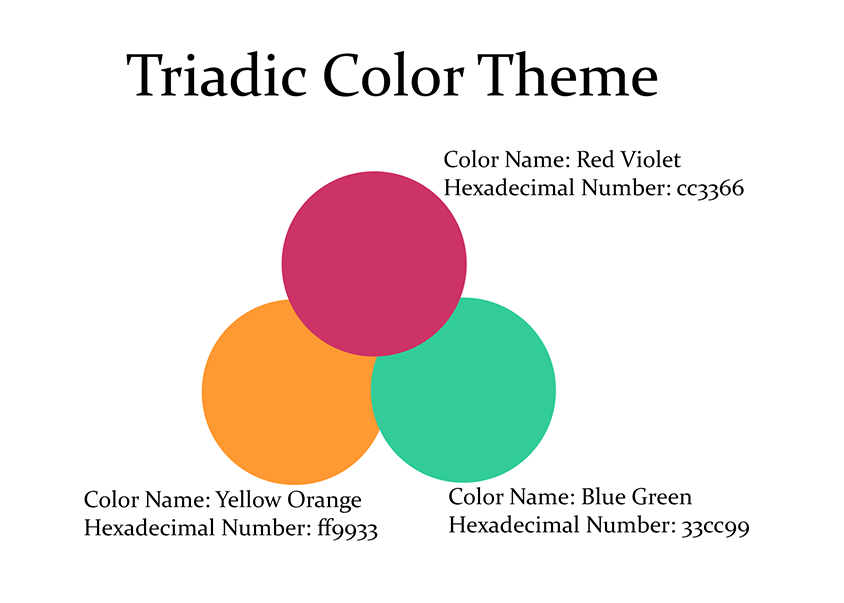
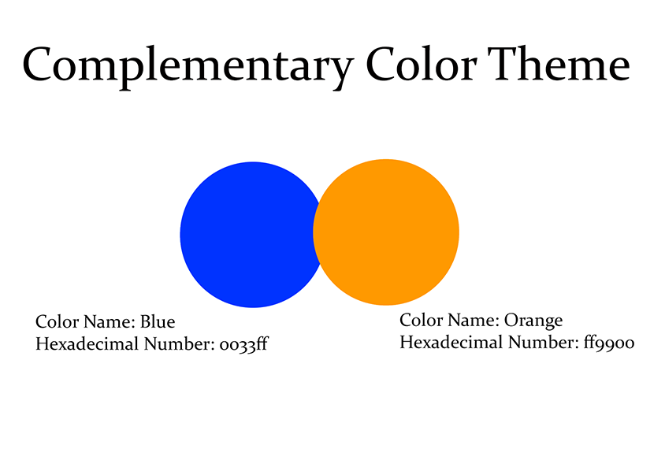
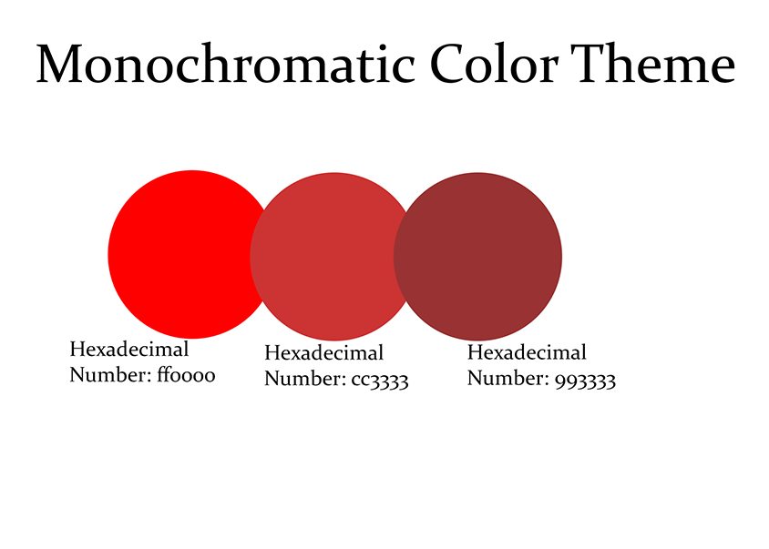
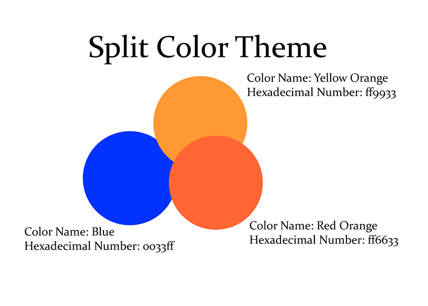
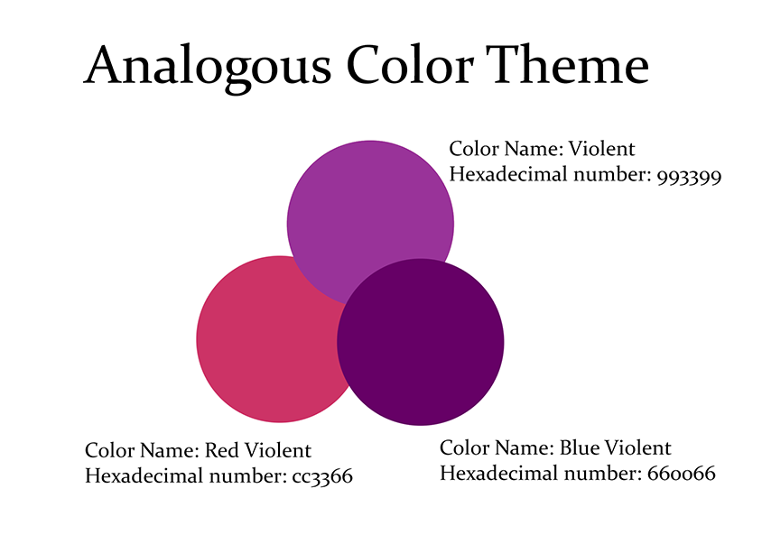

| Triadic Color Theme is a theme that is created using colors that are evenly spaced out on the color wheel.
Red violent, yellow orange, and blue green are evenly spaced out on the color wheel because they each have three colors between them. |
 |
| Complementary Color Theme is a theme that is created with colors that are opposite of a color on the color wheel.
For example, the opposite of blue is orange. |
 |
| Monochromatic color theme follows is a single color that uses a variety of different shades and tints of the same hue.
In this example, the monochromatic color theme is red. |
 |
| Split Color theme is achieved by using colors that include one base color and two colors on the opposite side of the color wheel.
In this example the opposite of blue is orange. The two orange colors are yellow orange and red orange. |
 |
| Analogous Colors theme includes colors that are adjacent to each other on the color wheel.
Violent, red violent and blue violent are next to each other on the color wheel. |
 |